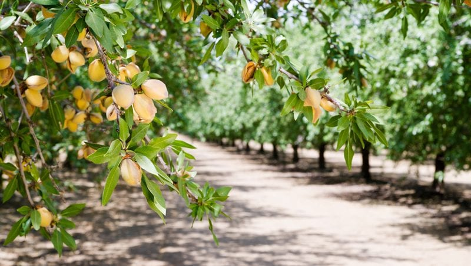
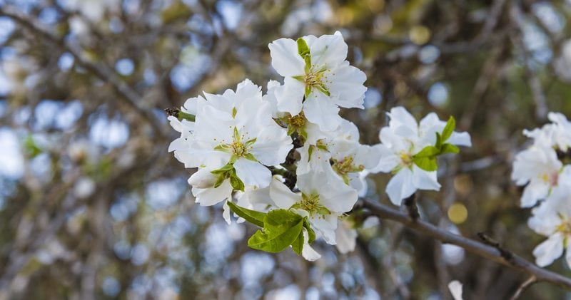
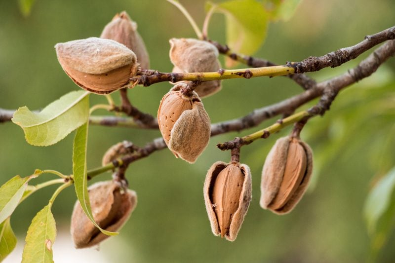
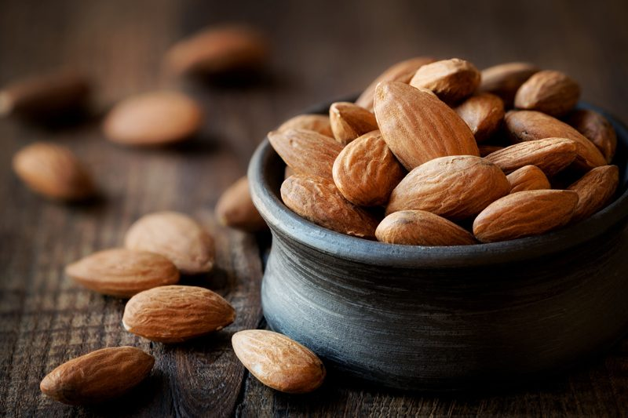

Almonds – A Stone Fruit
There are as many as 750 varieties of almonds that are recognized. Did you know that they are classified as a stone fruit? Almonds are broken down into two main categories: those who produce sweet almonds and the bearers of bitter almonds. The flavor of bitter almonds is due to a substance called amygdalin. When we chew a bitter almond, the amygdalin comes into contact with our saliva and is turned into glucose, hydrocyanic acid, and benzaldehyde; the last two of these are poisonous. So, no eating bitter almonds… you hear me?

The almond tree is cultivated mostly in the United States (Central California, Arizona, Texas, Georgia) as well as in countries like Spain, Italy, Iran, Syria, Morocco, and Australia. During the last two decades, California Almond production has tripled, making California account for over 80% of world supply.
Planting an Almond Tree
- The tree grows to around thirty feet in height and begins bearing a harvestable crop three years after planting.
- The trees reach full bearing five to six years after planting.
- Almonds are heavily dependent on water. It takes approximately one gallon of water just to produce one almond.

A Bud Forms then Blooms
- November to February – the almond bud begins to form. This is up to the mercy of weather conditions.
- February to March – the almond tree begins to produce blossoms that are ready for pollination. The flowers have five white to pale pink petals that fade to a magenta center. Multiple pollen-laden stamens are clustered around a single pistil that with pollination will eventually ripen into the almond fruit. Almond blossoms have a robust sweet aroma that is reminiscent of jasmine and lily.
Time for Pollination
- The second phase of almond tree farming is pollination.
- Once the almond tree has blossomed, it is time for pollination. Cross-pollination (need at least two trees) along with the help of bees are needed for fruit production.
- All over the world, almond growers depend significantly on healthy and robust honeybee colonies since they are the only insect that can facilitate the cross-pollination of the almond tree.
- March to June – the almond tree begins to transform the blossoms into an almond in their hull. It’s a very special time for almond growers since the almonds are developing in the shell.
Maturing and Hull-Split
- Almonds need 180 to 240 days for nuts to mature wherein the nut (embryo and shell) has dried to minimum moisture content.
- July and August – the hulls begin to split slightly open to allow for the almond shell to start drying. Over time, just as a flower would bloom, the hull continues to break open wider, and the hull itself becomes more hardened and leathery while still adhering to the almond.

Harvesting and Processing
- The harvest season for almond farmers is from August to October.
- The almond growers have mechanical tree shakers that shake the trees vigorously, and the almonds fall to the ground.
- For the next eight to ten days, the almonds continue to dry in their shell in the orchard and are then swept into rows and picked up by machines. The drying process of the almonds is critical for an optimal harvest.
- The almonds are then transported in their shells onto a roller where the shells, hulls, and remaining debris are removed.
- The almonds are brought to market through various packaging methods and sold as wholesale almonds.

Can You Get Raw Almonds?
There is a lot of confusion circling whether or not almonds can be sold raw or not.
“Effective September 2007, the USDA ordered all almond growers to “sterilize” almonds in one of several ways: heat them using steam, irradiate them using a controversial ionization process, roast or blanch them, or treat them with propylene oxide (PPO). The new rule created deceptive labeling. Almonds that have undergone chemical treatments or heating for pasteurization are still labeled “raw.” Consumers who purchase “raw” almonds may well think that those almonds are natural and unprocessed. Moreover, there will be no label requirement to specify what kind of pasteurization treatment was used among the many approved methods or combination of options.”
Many health food stores do sell almonds that are truly raw, but they come with a higher price tag since they are typically imported from Spain and Italy. So if obtaining truly raw almonds is your goal, you need to do research and look into the supplies source, because even pasteurized almonds (steamed, irradiated, or treated with chemicals) could be labeled as “raw.”
Online Sources for truly raw almonds; Bremner Farms and Blue Mountain Organics.
How the Whole Almond is Used
Every part of the harvest from the almonds to shells to hulls are utilized.
Almond Flowers
- They may be eaten raw as a finishing garnish but are delicate and do not stand up to heat.
Almond Wood
- Almond is a hardwood that creates a hot, long-lasting fire and produces only a small amount of ashes, much like oak.
- Almonds will need about a year to season, unlike oak, on the other hand, can take up to two full years or even longer to dry out.
- Some people smoke their food with almond wood since it gives food a sweet and nutty flavor.
Almonds Nuts
- Snack – Sweet almonds are enjoyed as a snack.
- Flour – Almonds can be ground to a flour to use in cooked and unbaked foods; crackers, bread, cereal, etc.
- Milk – Almond milk can be made right in your home. A delicious and nutritious alternative to dairy-based milk.
- Oil – Almond oil is obtained from seeds of both sweet and bitter almonds. If bitter almonds are used, this oil is used as a base for skin-creams and high-quality soap.
Almond Hash
- Almond hash is the material discarded during the shelling process when there may be nicks or flaws on the meat.
- These pieces of almonds are separated and are used for higher end animal feed when combined with grain feed.
Almond Shells
- Almond shells are the hard layer between the hull and the almond meat. The shell is what protects the almond from insects while on the tree.
- Almond shells can be ground up and used as bedding for garden planters and landscape material similar to wood chips.
- Almond shells are most commonly sold to co-generation plants to be used as a fuel source.
Almond Hulls
- They are sold for animal feed, most commonly dairy feed. The hulls add nutrition to the animal’s diet and aid in healthy milk production.
Disclaimer
This website is not intended to provide medical advice. All content, including text, graphics, images, and information available on this site is for general informational, entertainment, and educational purposes only. The content is not intended to be a substitute for professional diagnosis or treatment. The author of this site is not responsible for any adverse effects that may occur from the application of the information on this site. You are encouraged to make your own healthcare decisions, based on your research and in partnership with a qualified healthcare professional.
© AmieSue.com